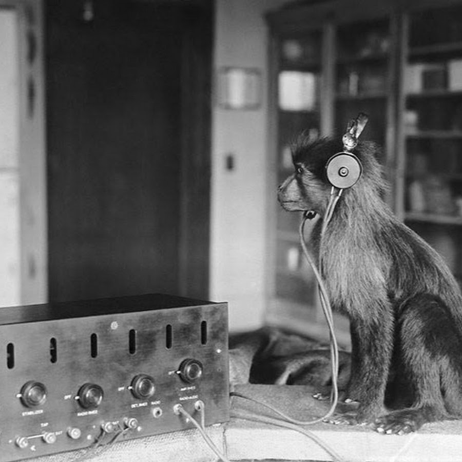
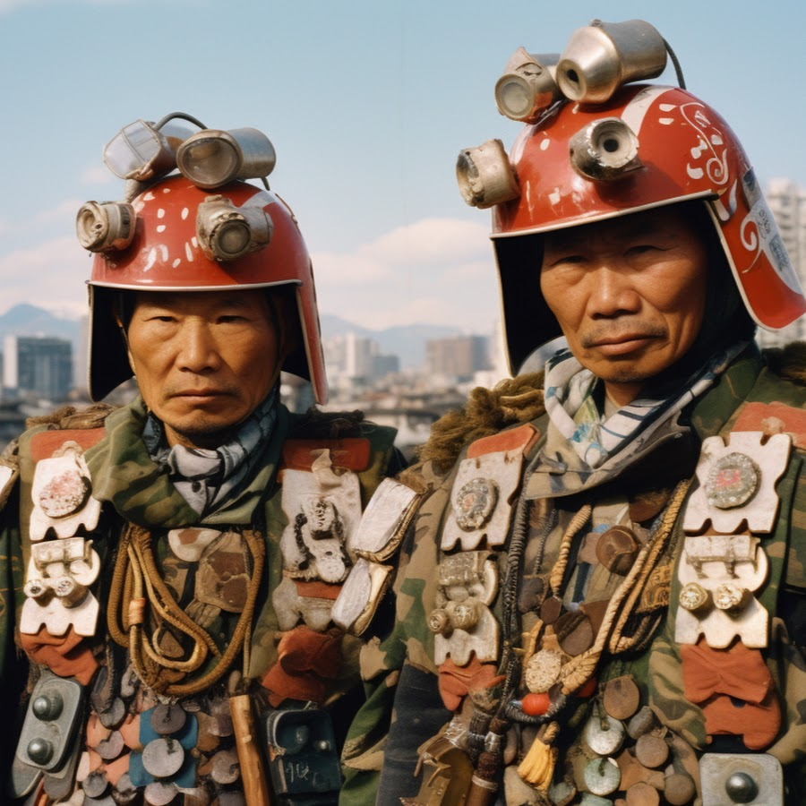

Les deux liens fournis sont préchargés. Cliquez sur la lecture générale pour lancer les deux platines, ou utilisez leur lecture individuelle. La pause conserve la position ; l’arrêt ramène les deux morceaux au début. Réglez ensuite les volumes et le crossfader.
Fondus : cliquez sur A ou B pour déplacer progressivement le crossfader vers cette platine. Réglez la durée en millisecondes sous Centrer (0 = immédiat). Le mouvement manuel et Centrer interrompent le fondu. La commande ne lance pas les lecteurs.
Boucles : pendant l’écoute, cliquez sur Entrée puis Sortie pour repérer un passage, puis activez Boucle. Vous pouvez aussi saisir les temps en secondes. Minimum : 1 seconde. YouTube peut introduire un délai au retour ; les boucles ne sont pas garanties sans coupure. Les repères sont enregistrés avec les mixtapes. Changer de morceau efface les repères ; l’arrêt général désactive les boucles.
Les listes se remplissent lorsque YouTube les communique au lecteur. Les titres sont récupérés quand disponibles ; sinon, la miniature et l’identifiant restent affichés. Les vidéos privées, supprimées ou non intégrables peuvent être indisponibles.
Collez un autre lien de playlist, puis cliquez sur Charger. Aucun téléchargement ni traitement du signal audio n’est effectué. Une connexion Internet est nécessaire.
Enregistre les deux playlists, les morceaux sélectionnés, les volumes, les vitesses, les boucles et le crossfader dans ce navigateur. Il ne s’agit pas d’un enregistrement audio.